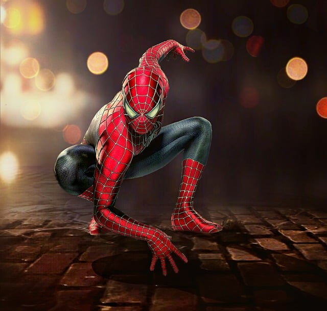

Super Mario
"Mamma mia, pessoal! Participei do projeto Reprograme-se e agora sou um verdadeiro herói. Aprendi HTML, CSS e
JavaScript para criar sites incríveis para a princesa Peach. Os professores foram incríveis e tornaram o
aprendizado fácil e divertido. Recomendo fortemente este curso para quem deseja se tornar um desenvolvedor
front-end!"

Homem Aranha
"Como o Homem-Aranha, eu precisei aprimorar minhas habilidades em desenvolvimento web. Graças ao projeto
Reprograme-se aprendi HTML, CSS, JavaScript e muito mais. Os professores foram ótimos e agora posso criar um
site incrível para o meu alter-ego, Peter Parker. Se você quer aprender a criar sites incríveis, recomendo
este curso com grandes responsabilidades!"
Naruto Uzumaki
"Oi pessoal, sou o Naruto Uzumaki e gostei muito do curso de Node.js do Reprograme-se que foi incrível!
Aprendi muito sobre essa tecnologia e agora posso criar aplicativos web ainda mais poderosos. Os professores
foram excelentes e tornaram o aprendizado fácil e divertido. Recomendo muito este curso para quem quer
aprimorar suas habilidades em Node.js! Tô certo!"